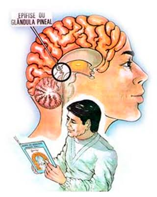

Nós não somos originários da Terra; nós somos habitantes do Mundo Racional, um mundo puro, perfeito e de puros Racionais que, por livre-arbítrio, descemos e acabamos nos transformando em energia e matéria densa. O nosso corpo físico, com o cérebro, a imaginação e o pensamento, funciona como uma verdadeira máquina da matéria que só nos traz dúvidas, ilusões e sofrimentos, mas dentro de todos nós existe o verdadeiro tesouro: o raciocínio, cuja antena natural é a glândula pineal. É exatamente aí que o aparelho racional entra em ação! Quando nós pegamos nos livros da Cultura Racional para ler e reler todos os dias, ativamos essa máquina do raciocínio, sintonizando a nossa antena diretamente com o Mundo Racional, fazendo com que o pensamento perca força e o raciocínio puro passe a comandar as nossas vidas, nos proporcionando o verdadeiro equilíbrio, a paz e a intuição correta para vivermos em harmonia com as leis da natureza. Este é o fim do cativeiro do pensamento e o início do nosso retorno coletivo ao nosso verdadeiro Mundo de Origem! Portanto, tratemos todos de ler e reler, ler e reler sempre, a fim de nos desenvolvermos racionalmente, pois por meio desse conhecimento teremos em nós o equilíbrio racional. Racionalmente!